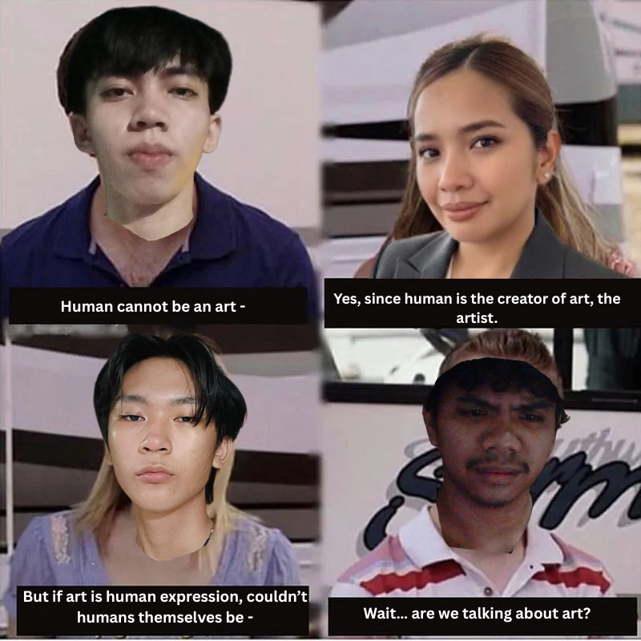
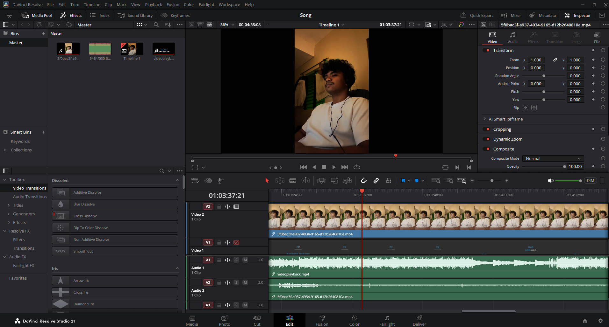
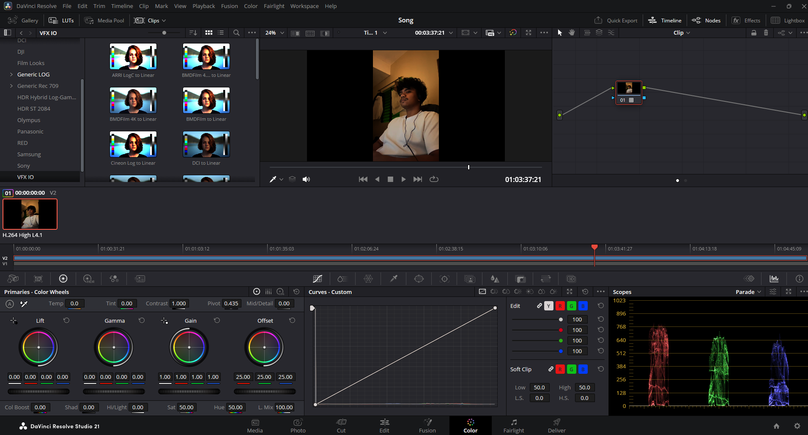
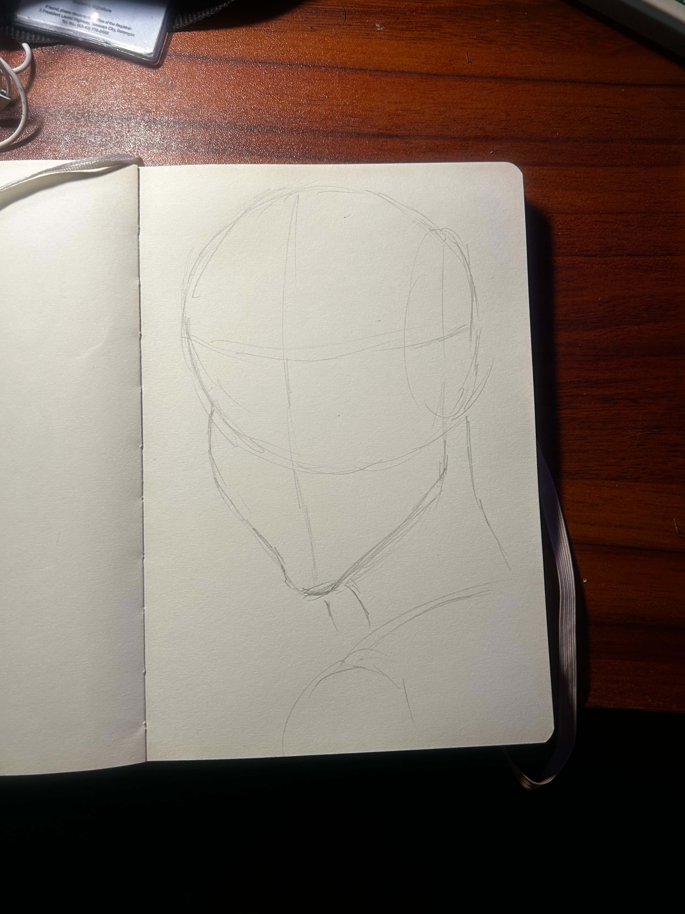
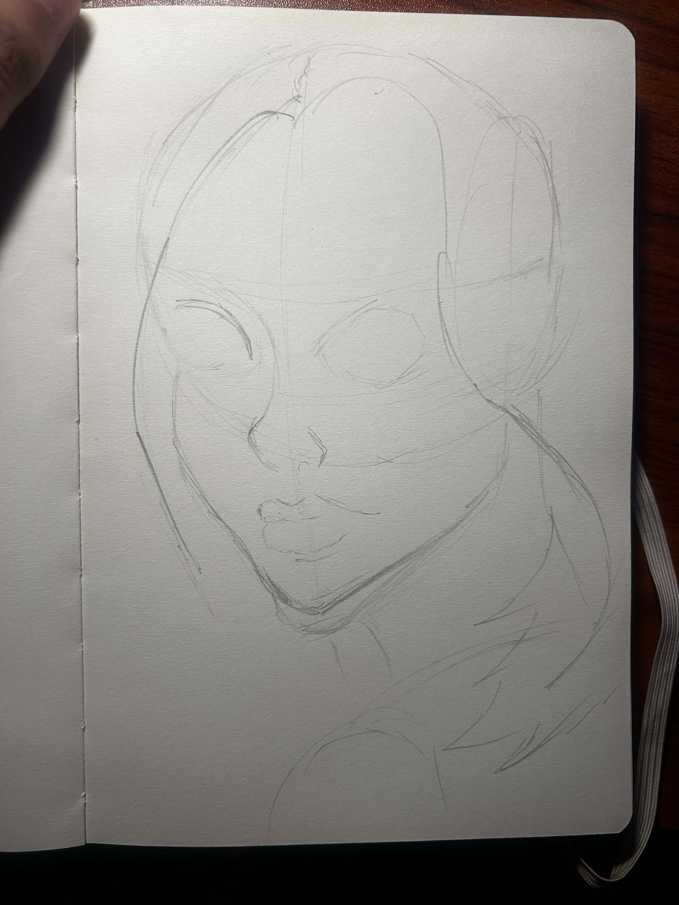
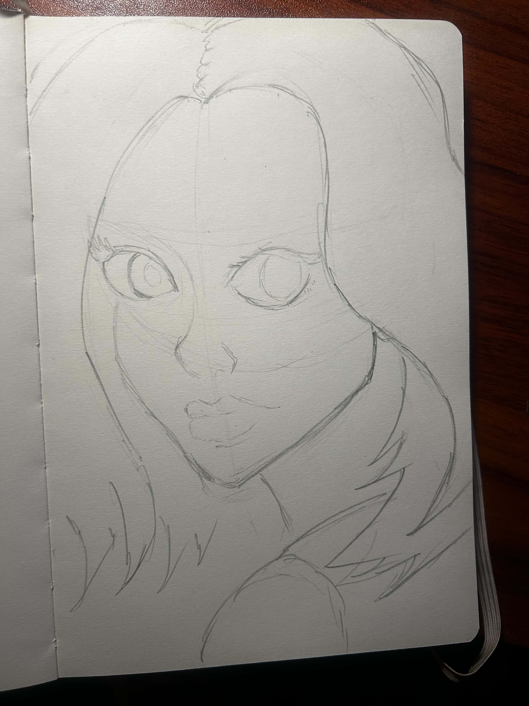
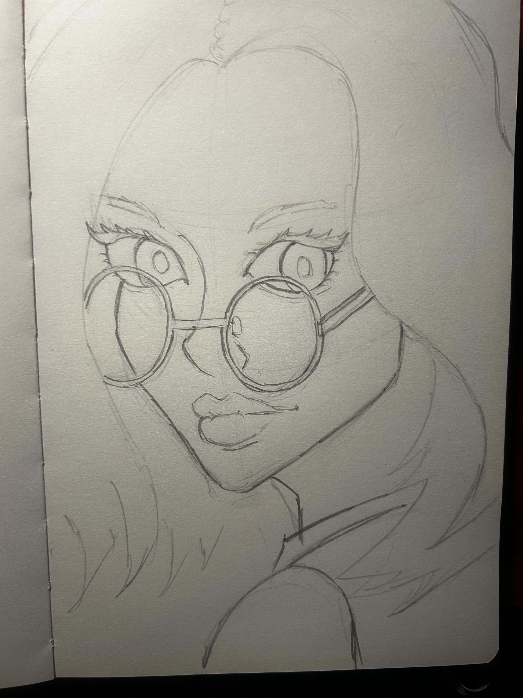
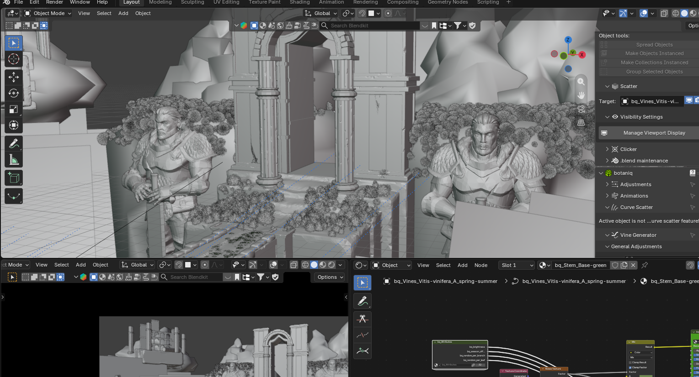
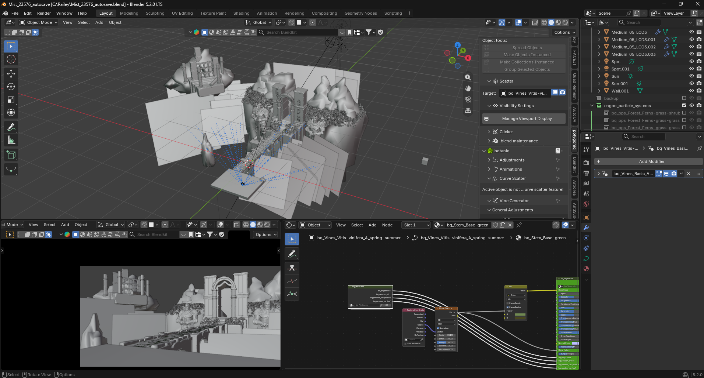

01 / INDIVIDUAL ARTWORK
A Moment to Breathe
An individual GEARTS course artwork, exhibited in its original form.
View full artwork ↗A PORTFOLIO OF LEARNING & EXPLORATION
An exhibition of my GEARTS outputs, artistic explorations and creative process.
PART I
A curated collection of all individual and group activities from GEARTS, organized to trace my learning throughout the course.
Individual course outputs, including a video-based artwork, presented as part of my GEARTS learning journey.
An individual GEARTS course artwork, exhibited in its original form.
View full artwork ↗
An individual activity included in my art appreciation collection.
View full artwork ↗An individual GEARTS output presented as moving-image art.
Watch on Google Drive ↗Collaborative GEARTS outputs created through group activities.

A collaborative artwork from our GEARTS group activities.
Contributors
Four artworks currently on display · Three individual works (including one video) and one group work. More course outputs may be added as the collection grows.
PART II
A collection of 3–5 artworks exploring artistic forms beyond my usual academic and everyday practice.
A song presented on video. The editing process traces two decisions: where the image meets the sound, and how the colour sets the mood.

A sketchbook portrait built from light construction lines. Darker marks around the eyes, glasses and hair give the face definition.
I’m a 3D generalist, and this artwork feels closest to who I am. It brings together what I’ve learned about 3D so far. I know there is still room to improve, but I’m proud of how it has come together.
Three explorations on display, spanning video, drawing and 3D environment art.
FINAL REFLECTION
With every new form of art I explored this semester, I discovered how exciting and intimidating it can be to begin again. Exploring something unfamiliar lets me learn with curiosity, without feeling that I have to meet anyone else’s expectations. At the same time, sharing work that is still developing can make me worry that it will not be good enough.
My experience with 3D art has helped me feel more confident. Practice, repetition and studying the craft in depth have made difficult techniques feel more approachable, and each project has taught me something I can carry into the next. I have learned that improvement is gradual: it comes from trying, making mistakes, and being willing to return to the work.
I am still learning, but I feel more open to taking creative risks and exploring forms of art that once felt unfamiliar. I want to keep building on what I have learned in 3D while staying curious about what else I can make. This semester reminded me that being a beginner can feel uncomfortable, but it can also be one of the most rewarding parts of making art.
PROCESS ARCHIVE
Process images and documentation from the artworks, grouped by piece.








MORE OF MY 3D WORK
Some of the artworks here may feel a little rough, and I’m sorry they may not be as polished as I’d hoped. I’m still learning these art forms. If you’d like to see more of my personal 3D work, you’re welcome to visit my separate portfolio. I hope you enjoy exploring it, Doc J!